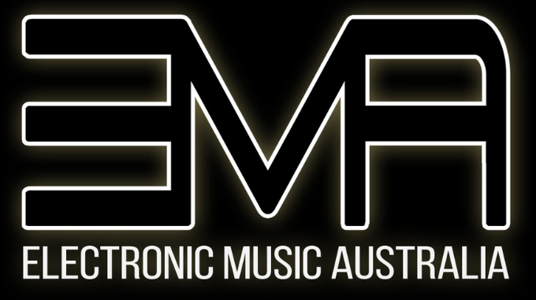

Electronic Music Australia
About Us
From humble beginnings, Australia’s electronic music scene exploded to the forefront of dance music culture, turning it into the juggernaut it is today. Aussie exports are some of the biggest and brightest electronic music acts in the world, influencing global trends. With a vast array of talent working their way through to get their music heard, the Australian electronic music scene shows no sign of slowing down.
Electronic Music Australia has been created to put the spotlight on Australian artists across all electronic music genres, past present and beyond.
It provides a platform for Australian artists to be featured and for audiences to discover new and upcoming Aussie talent.
Whether it’s showcasing the hottest up-and-coming club bangers or remembering veterans of the industry who have been providing the soundtrack to sweaty dance floors and raves of the past, EMA aims to deliver a range of sounds including Indie Dance, House and DnB, all the way down to the depths of the underground.
If you’re after a snapshot of what is happening in Australia's electronic music scene, keen to listen to different genres and artists, and want to help build an even stronger Australian electronic music community, you’ve come to the right place.
Listen
Tracks from the EMA SoundCloud.